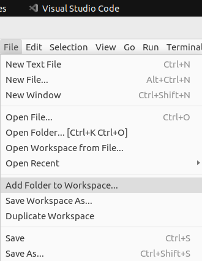

Stumble upon ...
These are just my own notes for my future reference.Folder tree
My folder tree disappeared. It looked similar to the picture below, with the Folders is grayed out.
I found on Github a thread with the screenshot above. Though it didn't offer a solution but it did mention a key word, which is Workspace.
Using that clues, I manage to Add Folder to Workspace and resolved the issue.
test